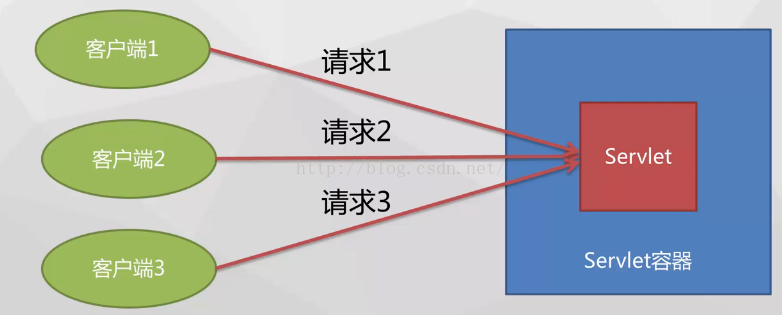
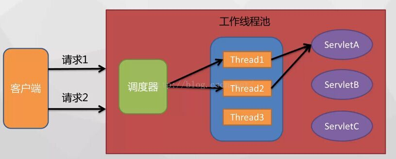
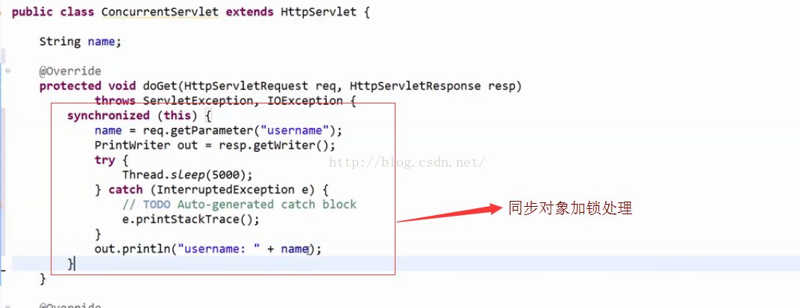
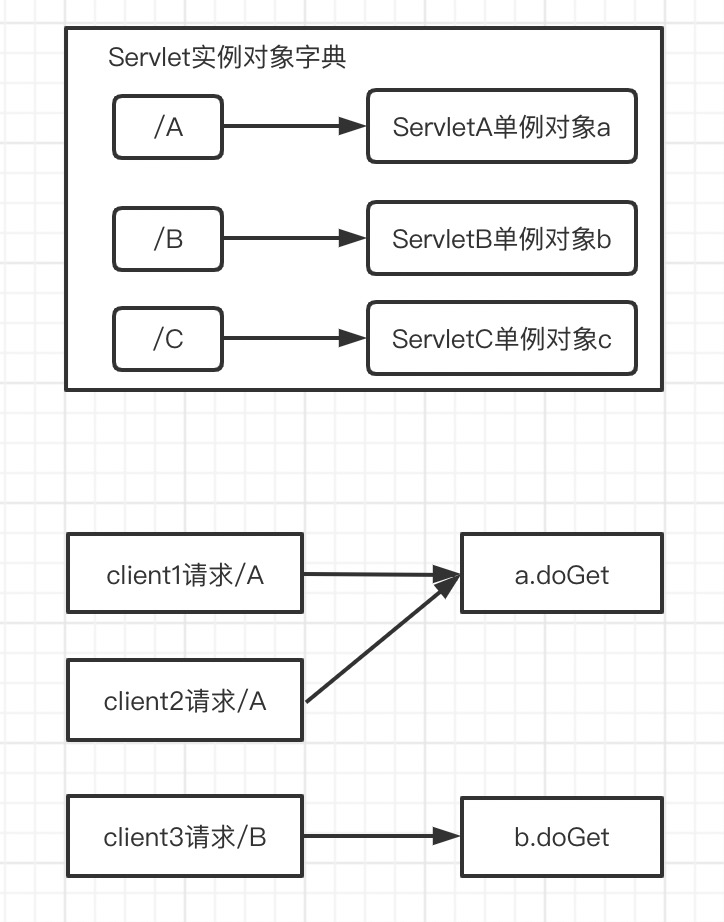

Java 002初识Servlet并发处理与线程安全
并发处理概念
在实际开发过程中，我们开发出来的web应用都是面向很多用户的，那么用户可能同时访问我们开发的具体的servlet，比如说现在有三个客户端，服务器有一个Servlet，三个请求可能同时发到客户端而且三个请求都是访问同一个Servlet，这个时候Servlet是如何处理呢？ 无非是两种处理模式：
- 就是串行化处理，也就是说三个请求依次处理，效率低；
- 就是并行化处理，也就是说三个请求同时处理，效率高。 
线程模型
servlet到底使用哪种方式进行请求处理的呢？
我们之前学习servlet处理的流程中，一直是从宏观的层面进行学习的，下面学习servlet请求处理流程中具体的。
线程模型工作流程：

- Servlet收到客户端的具体请求，Servlet首先会把请求发送给调度器，由调度器进行统一的请求派发，调度器会从线程池中选取一个工作主线程；
- 调度器把请求派发给该线程，由该线程的执行servlet的service方法；
- 这个线程正在执行的时候，servlet容器又收到另一个请求，调度器会从线程池中选取另外一个工作主线程来服务这个新的请求，容器并不关心请求访问的是同一个servlet还是另外一个servlet；
- 容器收到同一个servlet的多个请求时，这个servlet的service方法将会在多线程中并发执行；
- 线程使用完之后，就会把线程放回线程池中，如果说线程池中的线程都在进行服务，有新的请求，一般情况下这些请求会做排队处理，servlet容器也能配置servlet的一个最大的请求排队数量，假如超过这个数量，servlet就会拒绝相应的servlet请求。
Servlet并发处理的特点：
- 单实例：
从servlet生命周期中可以知道，对于具体的某个servlet来说，servlet只会初始化一次，调用一次init（），也就是说，在整个servlet容器中只会有一个servlet的实例对象，不管我们有多少请求都是针对同一个servlet实例对象。 - 多线程：
从线程的模型可以看到，请求的处理由多个工作线程来完成的，可以同时进行处理，同时处理的数量跟线程池的大小有关系。 - 线程不安全：
servlet是单个实例，但又是多个线程共用实例对象，意味着servlet容器在多个线程访问同一个servlet的实例对象是没有默认加锁操作的，造成线程不安全，因为我们可能出现某一个线程正在修改servlet的实例状态，但是另外一个线程又需要读取servlet的线程状态，这个时候就会出现数据不一致的情况。
Servlet线程安全注意要点
-
变量的线程安全：
– 参变量本地化：也就是说尽量使用局部变量，因为多线程并不共享局部变量。
– 使用同步块synchronized：就是对我们的一些代码进行加锁的处理，在做加锁处理的时候应该注意，尽可能的缩小synchronized的代码块的范围最好是不要再service方法上增加关键字，这样会对性能的损耗比较大。
-
属性的线程安全：
–ServletContext线程不安全：因为ServletContext是可以多线程读取它的属性，所以线程不安全，那我们在对sevletContext属性进行读写的时候，就需要注意做一些同步的处理
–HttpSession理论上线程安全：HttpSession属性是在用户会话期间存在的，那只能在处理同一个Session请求的线程中被访问，那Session对象的属性访问理论上是安全的，当用户打开多个属于同一个进程的浏览器窗口的时候，在这些窗口的访问属于同一个Session会出现多个请求，需要多个线程来进行处理，也会照成多个线程读写属性的问题，这个时候我们还会需要对Session的属性进行一个同步处理。所以是理论上的线程安全
–ServletRequst线程安全：对于每一个请求只能由一个线程进行处理，所以ServletRequst对象只能在同一个线程中被访问。
-
避免在Servlet中创建线程 因为Servlet本身就是多线程进行处理的，如果在Servlet再创建一些线程，就会导致执行情况变得非常复杂，出现一些多线程安全的问题
-
多个Servlet访问外部对象加锁  Servlet的线程安全问题只有在大量的并发处理分时候才会显现出来，而且很难发现，因此在写Servlet程序的时候就应该注意线程安全问题。

|
|
线程安全
首先说明一下对线程安全的讨论，哪种情况我们可以称作线程安全？
网上对线程安全有很多描述，我比较喜欢《Java并发编程实战》给出的定义，“当多个线程访问某个类时，不管运行时环境采用何种调度方式，或者这些线程将如何交替执行，并且在主调代码中不需要任何额外的同步或协同，这个类都能表现出正确的行为，那么就称这个类是线程安全的”。
Servlet的生命周期
Servlet是运行在Servlet容器中的，常用的tomcat、jboss、weblogic、jetty都是Servlet容器，其生命周期是由容器来管理。
Servlet的生命周期通过java.servlet.Servlet接口中的init（）、service（）、和destroy（）方法表示。
Servlet的生命周期有四个阶段：加载并实例化、初始化、请求处理、销毁。
加载并实例化
Servlet容器负责加载和实例化Servelt。当Servlet容器启动时，或者在容器检测到需要这个Servlet来响应第一个请求时，创建Servlet实例。当Servlet容器启动后，Servlet通过类加载器来加载Servlet类，加载完成后再new一个Servlet对象来完成实例化。
初始化
在Servlet实例化之后，容器将调用init（）方法，并传递实现ServletConfig接口的对象。在init（）方法中，Servlet可以部署描述符中读取配置参数，或者执行任何其他一次性活动。在Servlet的整个生命周期类，init（）方法只被调用一次。
请求处理
当Servlet初始化后，容器就可以准备处理客户机请求了。当容器收到对这一Servlet的请求，就调用Servlet的service（）方法，并把请求和响应对象作为参数传递。当并行的请求到来时，多个service（）方法能够同时运行在独立的线程中。通过分析ServletRequest或者HttpServletRequest对象，service（）方法处理用户的请求，并调用ServletResponse或者HttpServletResponse对象来响应。
销毁
一旦Servlet容器检测到一个Servlet要被卸载，这可能是因为要回收资源或者因为它正在被关闭，容器会在所有Servlet的service（）线程之后，调用Servlet的destroy（）方法。然后，Servlet就可以进行无用存储单元收集清理。这样Servlet对象就被销毁了。这四个阶段共同决定了Servlet的生命周期。
Servlet的调用过程
- 客户端通过发送请求给Tomcat，Tomcat发送客户端的请求页面给客户端。
- 用户对请求页面进行相关操作后将页面提交给Tomcat,Tomcat将其封装成一个HttpRequest对象，然后对请求进行处理。
- Tomcat截获请求，根据action属性值查询xml文件中对应的servlet-name，再根据servlet-name查询到对应的java类（如果是第一次，Tomcat则会将servlet编译成java类文件，所以如果servlet有很多的话第一次运行的时候程序会比较慢）。
- Tomcat实例化查询到的java类，注意该类只实例化一次。
- 调用java类对象的service()方法（如果不对service()方法进行重写则根据提交的方式来决定执行doPost()方法还是doGet()方法）。
- 通过request对象取得客户端传过来的数据，对数据进行处理后通过response对象将处理结果写回客户端。
从上面Servlet的调用过程可以看出，当客户端第一次请求Servlet的时候,tomcat会根据web.xml配置文件实例化servlet，
当又有一个客户端访问该servlet的时候，不会再实例化该servlet，也就是多个线程在使用这个实例。
JSP/Servlet容器默认是采用单实例多线程(这是造成线程安全的主因)方式处理多个请求的，这种默认以多线程方式执行的设计可大大降低对系统的资源需求，提高系统的并发量及响应时间。
Servlet本身是无状态的，一个无状态的Servlet是绝对线程安全的，无状态对象设计也是解决线程安全问题的一种有效手段。
所以，````servlet是否线程安全是由它的实现来决定的，如果它内部的属性或方法会被多个线程改变，它就是线程不安全的，反之，就是线程安全的```。
下面这个示例来自《Java并发编程实战》，在竞态条件下存在线程不安全。
|
|
递增操作count++并非是原子操作，它包含了三个独立的操作：读取count的值，将值加1， 然后将计算结果写入coune，这是一个“读取-修改-写入”的操作序列，并且其结果状态依赖于之前的状态。在执行时序不同的情况下，可能会产生错误。
多线程下每个线程对局部变量都会有自己的一份copy，这样对局部变量的修改只会影响到自己的copy而不会对别的线程产生影响，所以这是线程安全的。
但是对于实例变量来说，由于servlet在Tomcat中是以单例模式存在的，所有的线程共享实例变量。多个线程对共享资源的访问就造成了线程不安全问题。
- 避免使用实例变量
- 避免使用非线程安全的集合
- 在多个Servlet中对某个外部对象(例如文件)的修改是务必加锁（Synchronized，或者ReentrantLock），互斥访问。
1. 实现 SingleThreadModel 接口
该接口指定了系统如何处理对同一个Servlet的调用。如果一个Servlet被这个接口指定，那么在这个Servlet中的service方法将不会有两个线程被同时执行，当然也就不存在线程安全的问题。但是，如果一个Servlet实现了SingleThreadModel接口，Servlet引擎将为每个新的请求创建一个单独的Servlet实例，这将引起大量的系统开销，在现在的Servlet开发中基本看不到SingleThreadModel的使用，这种方式了解即可，尽量避免使用。
|
|
2.同步对共享数据的操作
使用synchronized 关键字能保证一次只有一个线程可以访问被保护的区段，可以通过同步块操作来保证Servlet的线程安全。如果在程序中使用同步来保护要使用的共享的数据，也会使系统的性能大大下降。这是因为被同步的代码块在同一时刻只能有一个线程执行它，使得其同时处理客户请求的吞吐量降低，而且很多客户处于阻塞状态。另外为保证主存内容和线程的工作内存中的数据的一致性，要频繁地刷新缓存,这也会大大地影响系统的性能。所以在实际的开发中也应避免或最小化Servlet 中的同步代码。
同步代码：
|
|
3.避免使用实例变量
线程安全问题很大部分是由实例变量造成的，只要在Servlet里面的任何方法里面都不使用实例变量，那么该Servlet就是线程安全的。
在Servlet中避免使用实例变量是保证Servlet线程安全的最佳选择。
Java 内存模型中，方法中的临时变量是在栈上分配空间，而且每个线程都有自己私有的栈空间，所以它们不会影响线程的安全。
JSP/Servlet的多线程原理:
- servelet就是一个CGI,但比传统的CGI要快得过
传统CGI是多进程的,servlet是多线程的
以多线程方式执行可大大降低对系统的资源需求,提高 系统的并发量及响应时间. - JSP/Servlet容器默认是采用单实例多线程(这是造成线程安全的主因)方式处理多个请求的：
当客户端第一次请求某一个JSP文件时(有的servlet是随容器启动就startup)：
服务端把该JSP编译成一个CLASS文件
并创建一个该类的实例
然后创建一个线程处理CLIENT端的请求。 - 多请求，多线程：
如果有多个客户端同时请求该JSP文件，则服务端会创建多个线程。每个客户端请求对应一个线程。
servlet 的线程安全
-
servlet里的实例变量
servlet里的实例变量，是被所有线程共享的,所以不是线程安全的.
-
servlet方法里的局部变量
因为每个线程都有它自己的堆栈空间,方法内局部变量存储在这个线程堆栈空间内,
且参数传入方法是按传值volue copy的方式
所以是线程安全的 -
Application对象
在container运行期间,被整个系统内所有用户共同使用,所以不是线程安全的
-
ServletContext对象
ServletContext是可以多线程同时读/写属性的,线程是不安全的。
struts2 的ServletContext采用的是TreadLocal模式,是线程安全的
-
HttpServletRequest对象和HttpServletResponse对象
每一个请求，由一个工作线程来执行，都会创建有一对新的ServletRequest对象和ServletResponse,然后传入service()方法内
所以每个ServletRequest对象对应每个线程，而不是多线程共享，是线程安全的。所以不用担心request参数和属性的线程安全性
-
HttpSession
Session对象在用户session期间存在，只能在属于同一个SessionID的请求的线程中被访问，因此Session对象的理论上是线程安全的。
(当用户打开多个同属于一个进程的浏览器窗口（常见的弹出窗口），在这些窗口的访问属于同一个Session，会出现多次请求，需要多个工作线程来处理请求,这时就有可能的出现线程安全问题)
servlet 尽量用方法内变量,就一定线程安全么? 局部变量的数据也来自request对象或session对象啊,它们线程安全么?
servletRequest线程是安全的
因为:每个 request 都会创建一个新线程,每个新线程,
容器又都会创建一对servletRequest和servletResponse对象(这是servlet基本原理)
所以servletRequest对象和servletResponse对象只在一个线程内被创建,存在,被访问
常见的线程安全的解决办法:
-
使用方法内局部变量
是因为各线程有自己堆栈空间,存储局部变量
方法参数传入,多采用传值（volue copy)传入方法内
-
对操作共享资源的语句,方法,对象, 使用同步
比如写入磁盘文件,采用同步锁，但建议尽量用同步代码块，不要用同步方法
-
使用同步的集合类
使用Vector代替ArrayList
使用Hashtable代替HashMap。
-
不要在 Servlet中再创建自己的线程来完成某个功能。
Servlet本身就是多线程的，在Servlet中再创建线程，将导致执行情况复杂化